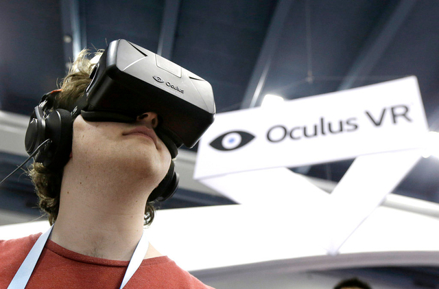

Der US-Geheimdienst Secret Service hat einen fehlbaren Agenten in die USA zurückbeordert. Beim Warten auf Obama wurde ihm offenbar langweilig.
Treffen der G7-Minister: Obama (Mitte) mit Angela Merkel (rechts) und David Cameron (links). (24. März 2014)
Der US-Geheimdienst Secret Service hat drei zum Schutz von Präsident Barack Obama abgestellte Agenten vorzeitig aus den Niederlanden abberufen. Disziplinarische Verfehlungen seien der Grund gewesen, sagte der Sprecher der Behörde, Ed Donovan. Weitere Ausführungen zu dem Vorfall machte er nicht.
Die «Washington Post» hatte jedoch berichtet, dass einer der drei Agenten in einem Hotel in Amsterdam schwer betrunken aufgefunden worden sei. Das Personal habe daraufhin die US-Botschaft verständigt. Der betroffene Agent sei am Sonntag zurück in die USA beordert worden. Mit ihm mussten auch zwei Kollegen die Niederlande verlassen, weil sie den Mann nicht von seinem Fehlverhalten abgebracht hatten, wie es weiter hiess.
Leibwächter des US-Präsidenten
Der Secret Service ist eine amerikanische Bundesbehörde, die vor allem für den Schutz des Präsidenten zuständig ist. Zuletzt war der Secret Service bereits durch das Fehlverhalten führender Beamter in die Schlagzeilen geraten.
Die Behörde betonte, die Sicherheit Obamas sei durch den Vorfall nicht beeinträchtigt gewesen. Obama war am Montag in den Niederlanden eingetroffen und am späten Dienstag nach Brüssel weitergereist.
Facebook setzt mit Milliarden auf Datenbrillen
Mark Zuckerberg bleibt auf Einkaufstour: Facebook hat die Datenbrillen-Entwicklerin Oculus VR erworben – und mit ihr das Modell Rift, mit dem die Datenbrille massentauglich gemacht werden soll.

Wird bis jetzt hauptsächlich bei Games eingesetzt: Datenbrille von Oculus VR.
Sind Datenbrillen das nächste grosse Ding? Facebook-Gründer Mark Zuckerberg jedenfalls ist davon überzeugt und kauft für bis zu 2,3 Milliarden Dollar den Spezialisten Oculus VR.
Nur wenige Wochen nach dem Deal mit WhatsApp fädelt Zuckerberg damit bereits den nächsten Milliarden-Zukauf ein. Die erst vor zwei Jahren gegründete Oculus VR stellt Datenbrillen her, mit denen Nutzer bei Computerspielen in eine virtuelle Realität eintauchen können. Viele Experten rechnen damit, dass solche tragbaren Geräte nach Smartphone und Tablet-PC den nächsten Innovationsschub in der Branche auslösen werden.
«Die sozialste Plattform aller Zeiten»
«Wir gehen eine langfristige Wette ein, dass eine umfassende, virtuelle und erweiterte Realität ein Teil des Alltags der Menschen wird», sagte Zuckerberg. «Oculus hat die Chance, die sozialste Plattform aller Zeiten zu erschaffen und damit die Art und Weise zu verändern, wie wir arbeiten, spielen und kommunizieren.»
In der Vergangenheit war dem 29-Jährigen vorgeworfen worden, er habe verschlafen, dass immer mehr Internetnutzer auf ihr Smartphone setzen und den PC ausgeschaltet lassen.
Mit der Übernahme von Oculus VR steigt das weltgrösste soziale Netz erstmals in ein Hardware-Unternehmen ein. Facebook (FB 64.89 1.23%) zahlt für Oculus VR 400 Millionen Dollar in bar und etwa 1,6 Milliarden Dollar in eigenen Aktien. Hinzu kommen später bis zu 300 Millionen Dollar, wenn bestimmte Ziele erreicht werden, wie Facebook nach Börsenschluss mitteilte.